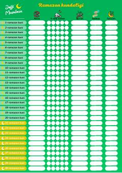

BUKichkintoylar uchun maxsus Ramazon oyi kundaligi va ibodat daftari.
Ushbu kitob bolalar uchun maxsus tayyorlangan Ramazon kundaligi bo'lib, kichkintoylarga ro'za, namoz, Qur'on va sadaqa kabi ibodatlarni o'rganishda yordam beradi. Unda Ramazon oyining har bir kuni uchun alohida sahifalar ajratilgan.